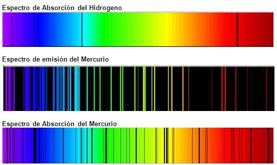

Antecedentes del modelo atómico de Böhr
De acuerdo con el electromagnetismo clásico una carga en movimiento acelerado emite energía en forma de radiación electromagnética (ondas). Un electrón que describe una trayectoria cerrada está sometido a una aceleración y, por tanto, debe emitir energía. Como consecuencia, el electrón acabaría por impactar sobre el núcleo, Esto invalidaba el modelo de Rutherford.
Paralelamente a los estudios de Böhr existían unos científicos, los espectroscopistas, que se dedicaban a realizar los llamados espectros. Uno de los tipos de espectros que realizaban eran los espectros atómicos, en los que los átomos, en forma gaseosa, pueden absorber o emitir luz (u otras radiaciones electromagnéticas) y produciendo una imagen característica. Lo interesante era que cada elemento químico tenía, tiene, un espectro propio y distinto de los demás, lo que llevaba a la idea de que estos espectros debían estar íntimamente relacionados con la estructura del átomo. Sin embargo, los espectroscopistas no conseguían explicar la cantidad ingente de datos que habían conseguido. El gran éxito de Niels Böhr fue explicar con bastante precisión el espectro atómico del átomo más simple: el hidrógeno, de ahí la importancia que alcanzó su modelo atómico. La existencia de los espectros atómicos (conjunto de líneas que se obtenían al hacer emitir o absorber radiaciones por parte de los átomos) era inexplicable con el modelo de Rutherford.
Niels Böhr, (biografía) con su modelo atómico, intentó dar una explicación.
